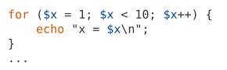
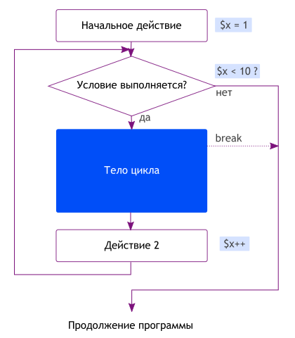

Раз уж мы заговорили про вычисления и действия с переменными, то поговорим и про циклы. Цикл — это специальная конструкция, которая выполняет код внутри нее (в теле цикла) заданное число раз (или пока выполняется какое-то условие).
Вот пример простого цикла:
Он выведет такой результат (запустить и посмотреть):
x = 1 x = 2 x = 3 … x = 9
Видно, что команда echo была выполнена 9 раз, причем каждый раз
значение переменной $x увеличивалось на 1. Разберем, как этот
код работает. Цикл создается с помощью инструкции for и имеет
такой вид:
for (действие1; условие; действие2) {
тело цикла;
тело цикла;
тело цикла;
}
Обрати внимание, как расставлены круглые скобки (), две точки с запятой, фигурные скобки {}. Они все обязательны, и точек с запятой внутри круглых скобок всегда должно быть ровно 2, не больше и не меньше. Тело цикла заключено в фигурные скобки и содержит 0 или больше команд, их пишут с отступом из 4 пробелов для лучшей читаемости. Вот как выполняется цикл:
В начале выполняется действие1. Потом проверяется условие, если оно верно, то выполняется тело цикла, затем действие2, и снова проверяется условие. Пока оно истинно, цикл будет продолжаться. Как только условие перестает выполняться, цикл заканчивается и программа продолжает выполняться дальше.
Если условие всегда истинно (например, там написано 1 > 0), то цикл
будет вечным и программа будет работать, пока ты не завершишь ее принудительно. Если
условие всегда ложно, тело цикла не выполнится ни разу.
Также, цикл можно завершить раньше времени командой break.
Она выходит из цикла и продолжает выполнение программы. Очевидно, что эту
команду можно ставить только внутри тела цикла.
$i++ — то же самое, что $i+=1, или $i = $i + 1 — все эти действия просто увеличивают хранящееся в $i число на единицу. Мы проходили это в уроке про переменные, помнишь?
Напиши программу, выводящую таблицу умножения чисел от 1 до N на самих себя, используя цикл. Программа должна вывести примерно такой результат:
1×1 = 1 2×2 = 4 ... 9×9 = 81
Ты можешь взять пример кода с картинки ниже за основу.
Условия и действие в шапке цикла не обязаны быть связаны друг с другом и
работать с одной и той же переменной. Например, можно написать
for ($a = 1; $b < 10; $c++) { ... }. Однако, так лучше не делать,
потому что код становится запутанным. Действие1 и
действие2 можно не писать, но точек с запятой внутри скобок все равно
должно быть ровно две. Можно даже не писать условие, но
тогда цикл получится вечным: for (;;) { тело; }
Теперь давай применим циклы на пpактике. Решим с их помощью такую задачу:
W5.2 Некто кладет в банк 10000 р. Банк начисляет 10% годовых (то есть, каждый год на счету становится на 10% больше, чем в прошлом году). Напиши программу, считающую, через сколько лет в банке будет миллион? Сколько лет будет этому некто? Доживет ли некто до этого дня, если сегодня ему 16 лет?
Если у тебя что-то не работает в программе, попробуй поставить внутри цикла
команду echo которая выведет значения всех переменных.
Правильный ответ: чуть больше миллиона накопится примерно за 49 лет, соответственно вкладчику исполнится 65.
Предыдущая задача была слишком простая, правда? Что ж, пора взяться за проблему посложнее. Реши такую задачу:
W5.1. Школьник решил купить айфон и для этой цели взял кредит. Сумма кредита — 40000 р., банк в начале каждого месяца (включая первый) начисляет 3% от остатка долга за пользование кредитом и 1000 р. комиссии (да, а ты думал, обойдешься процентами?). После этого, в конце каждого месяца, наш герой идет в банк и пытается выплатить долг, но он не может заплатить более 5000 р за раз (сэкономленных на школьных завтраках). Вопрос, когда он избавится от долга? Во сколько школьнику обошелся айфон?
То есть, каждый месяц банк начисляет процент и комиссию, увеличивая долг, и каждый месяц школьник его потихоньку выплачивает.
Примечание: чтобы завершить цикл, можно использовать команду break — это команда, которая прерывает текущий цикл раньше времени.
Всего будет выплачено около 61270 р. за 13 мес.
Проверь, что программа правильно работает с любой другой суммой. Например, по кредиту на 1000 р. всего придется заплатить 2030 р., а по кредиту на 4000 р. выплатить надо будет около 6123 р. за 2 месяца.
Готово? Переходи к следующему уроку.
-----
Куда вводить код? Что надо скачать? Читай первый урок.
Есть вопросы? Задай гуглу или автору.
Нравится урок? Лайкай, репости, приглашай друзей, пости котов и Канако, шли добра, решай задачи, помогай новичкам! Кнопок для лайка нет, кто хочет зарепостить, всегда может сделать это ручками.
Как связаться с автором? Я хочу переодеть его в платье школьницы и жениться на нем. Ящик codedokode (кот) gmail.com ждет ваших писем. А вконтактик и фейсбучек ждут ваших лайков. Но ответ на банальные вопросы лучше искать в Гугле или на stackoverflow.
Я решил задачку!!! Молодец, делай следующий урок
Ideone не работает!11 Ну так открой Гугл и найди сайты вроде https://repl.it/languages/php , http://phptester.net/ , http://sandbox.onlinephpfunctions.com/ , http://codepad.org/ или http://www.runphponline.com/ . Не ленись.
Почему так много рекламы? Всю рекламу на сайте ставит юкоз (бесплатный хостинг же), а не я.
На сайте установлена система Google Analytics (и еще несколько аналогичных систем от юкоза). Данные о твоем IP-адресе, посещаемых страницах, времени посещения отправляются в Google Corporation, США. Хочу знать, кто и зачем сюда заходит. Поверь, другие сайты делают точно так же. Все сайты пишут логи.